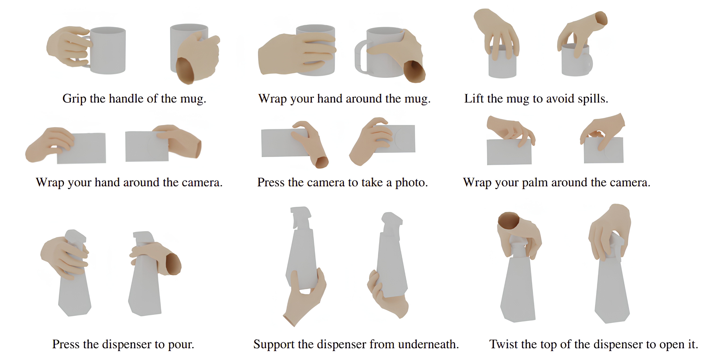
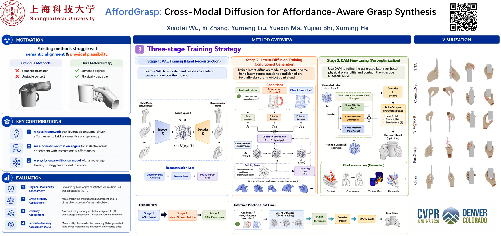

Generating human grasping poses that accurately reflect both object geometry and user-specified interaction semantics is essential for natural hand–object interactions in AR/VR and embodied AI. However, existing semantic grasping approaches struggle with the large modality gap between 3D object representations and textual instructions, and often lack explicit spatial or semantic constraints, leading to physically invalid or semantically inconsistent grasps. In this work, we present AffordGrasp, a diffusion-based framework that produces physically stable and semantically faithful human grasps with high precision. We first introduce a scalable annotation pipeline that automatically enriches hand–object interaction datasets with fine-grained structured language labels capturing interaction intent. Building upon these annotations, AffordGrasp integrates an affordance-aware latent representation of hand poses with a dual-conditioning diffusion process, enabling the model to jointly reason over object geometry, spatial affordances, and instruction semantics. A distribution adjustment module further enforces physical contact consistency and semantic alignment. We evaluate AffordGrasp across four instruction-augmented benchmarks derived from HO-3D, OakInk, GRAB, and AffordPose, and observe substantial improvements over state-of-the-art methods in grasp quality, semantic accuracy, and diversity.


@inproceedings{Wu2026AffordGraspCD,
title={AffordGrasp: Cross-Modal Diffusion for Affordance-Aware Grasp Synthesis},
author={Xiaofei Wu and Yi Zhang and Yumeng Liu and Yue Ma and Yujiao Shi and Xuming He},
year={2026},
url={https://api.semanticscholar.org/CorpusID:286376945}
}